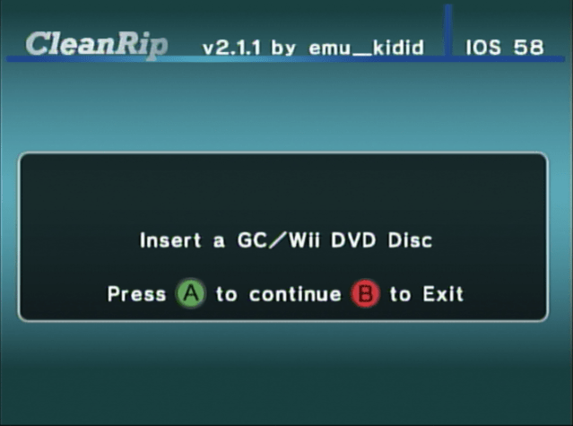

导出 Wii/GameCube 游戏
如果需要中文帮助，国内用户可以添加QQ群：417992332。
想要导出GameCube或者Wii光碟？ 这有两种方法，决定于你有什么工具。
Cleanrip 教程
你需要
- 有至少4.7GB可用空间的SD卡或U盘(双层光盘为8.5G)。
- CleanRip
步骤
第一节 - 下载/安装
- 解压 CleanRip 并将其放在SD卡或U盘的
apps文件夹。 - 将SD卡插入Wii，然后从Homebrew Channel启动CleanRip。
第二节 - 翻录
- 选择您要将游戏翻录到 - U盘或SD卡。

- 在此屏幕，它会询问是否要下载带游戏校验的文件，以验证翻录是否与光盘1:1。 你可以选择
Yes或No来下载此文件。
- 现在插入要翻录的游戏。 

- 如下图所示来设置。
如果你想翻录 此列表中的13个游戏之1， 请设置 Dual Layer为 Yes。

- CleanRip现在将翻录你的游戏。 这可能需要一段时间，因为它将翻录完整的4.7G光盘(双层光盘为8.5G)。

通过局域网导出游戏
title: “通过本地网络导出WIi/GameCube 游戏” —
你需要
- 一台Wii。
- DVD Dump Tool
您的Wii和电脑必须连接到同一个本地网络。
步骤
第一章 - 下载/安装
- 解压DVD Dump Tool，放在SD卡/U盘上的
apps文件夹里。 - 把你的SD卡插入Wii，然后从HBC启动DVD Dump Tool。
第二章 - 导出
- 按下十字键的右键，然后按A。

- 选择你想复制的光碟（选项为：`GameCube光盘</ code>，
Wii单层光盘</ code>，Wii双层光盘</ code>，然后按“ A” 。） <img src="/images/DumpDiscs_LAN/3.png" alt="3" /></p></li>
现在把游戏塞进Wii。

现在把游戏塞进Wii。 (如果游戏已经插入您的Wii，弹出它并放回去)


记住你的Wii 地址 (IP地址)。

打开您的电脑中的浏览器，输入Wii地址并按回车。

你应该会看见这个。 点击 Click here to download XXXX.iso` 
1. 传输速度肯定不是最快的，但如果你不能用其他东西，这比没有更好。